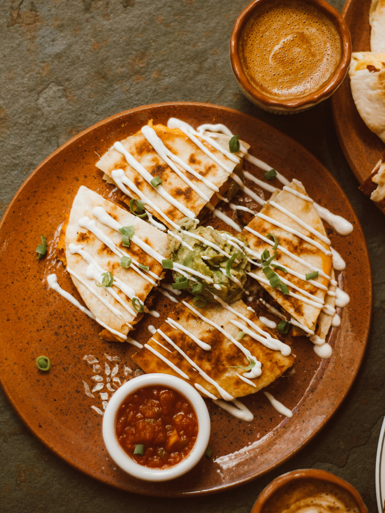

Home
Quesadillas
Quesadillas

Description
Quesadillas are a beloved staple of Mexican cuisine, known for their crispy tortilla exterior and warm, cheesy filling. Traditionally made with corn tortillas and Oaxaca cheese, quesadillas have evolved over time to include a variety of fillings like beans, vegetables, meats, and spices. They’re typically cooked on a griddle, or "comal," until the outside is golden and the cheese inside is irresistibly melted. Easy to customize and quick to prepare, quesadillas are perfect for a casual meal, a midday snack, or a satisfying appetizer.
The origin of quesadillas dates back to colonial Mexico, where indigenous culinary traditions blended with Spanish influences. Early versions were likely simple just tortillas filled with cheese or squash blossoms reflecting the ingredients available at the time. As regional flavors developed, so did the quesadilla, with each area of Mexico adding its own twist. Today, quesadillas are enjoyed around the world and continue to adapt, from street food stalls in Mexico City to home kitchens everywhere, proving that good food never goes out of style.
Ingredients
For The Pico De Gallo
- 2 Vine Tomatoes (Diced)
- Half White Onion (Finely Diced)
- 1 Small Handful Fresh Coriander (Finely Chopped)
- 1 lime (Juice)
- 1 Tablespoon Extra Virgin Olive Oil
- 1 Teaspoon Of Fajita And Taco Mix
- Salt And Freshly Ground Black Pepper
For The Guacamole
- 1 Large Ripe Avocado
- Small Handful Fresh Coriander (Finely Chopped)
- 1/2 White Onion (Finely Diced)
- 1/2 Lime (Juice)
For The Quesadilla
- 300g / 10 1/2 oz Shredded Chicken
- 4 Burrito Tortilla Wraps
- 150g / 5 oz Grated Cheddar Cheese
- 3 Spring Onions (Finely Chopped)
- 1/2 Cup Mayo
- 2 Tablespoons Chipotle Paste
- 2 Tablespoons Olive Oil
Steps
- Make the pico de gallo: In a bowl add the tomatoes, onion, coriander, lime juice, extra virgin olive oil, Fajita & Taco Mix and a pinch of salt & pepper. Combine everything with a spoon.
- Prepare the quick guacamole: Cut the avocado in half and remove the stone. Scoop out the flesh with a spoon and roughly mash in a bowl with a fork. Add the coriander, onion and the lime juice, then season with salt and pepper. Mix well.
- In a small bowl combine the mayo with the Chipotle Paste to make chipotle mayo.
- Make your quesadillas: Add half of the shredded chicken on top of a Burrito Tortilla Wrap, then top with the grated cheese and spring onions. Add a few spoonfuls of the Chipotle Mayo scattered on top and cover with another burrito wrap.
- Heat up a pan, brush your quesadilla with a little olive oil and warm it up in the pan, allow the cheese to melt and the wraps to get toasted on both sides. Repeat the steps to make a second quesadilla.
- When ready to serve, cut the quesadillas into quarters and serve with the guacamole and pico de gallo.